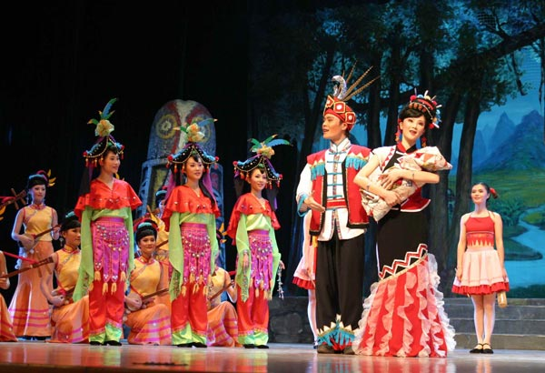
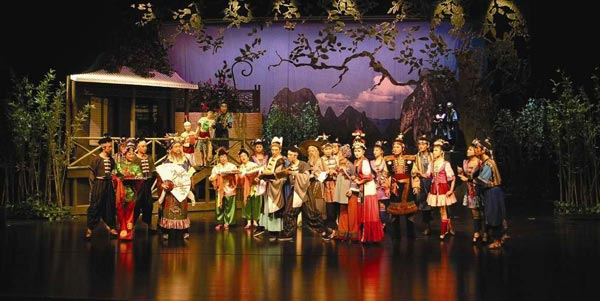
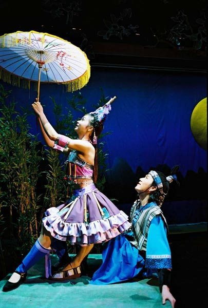
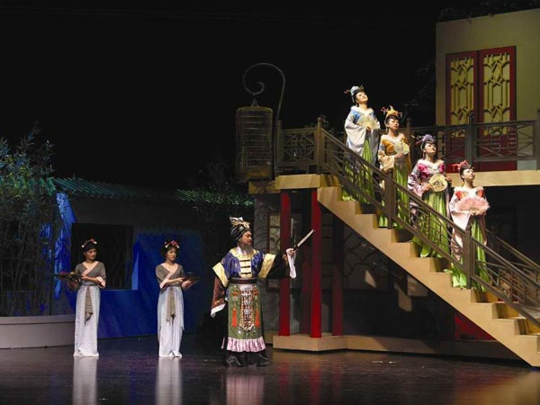
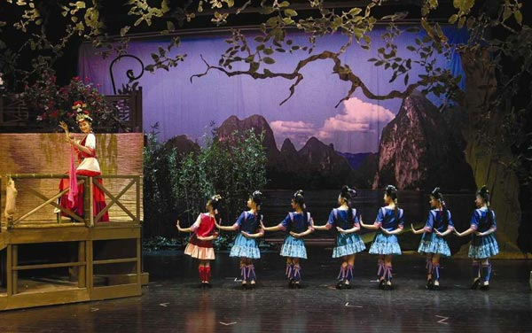

序幕
第一幕
山歌好比春江水，不怕滩险弯又多。
刘三姐与哥哥刘二乘船到宜山来投奔外婆，忽闻江岸上传来了采茶姑娘们甜美的山歌声……
茶山上，兰芬与众姐妹兴高采烈地采摘新茶。刘三姐寻声而至，正巧赶上莫府管家莫进财率领家丁扛着禁牌也来到了茶山上，他们以“莫家要在此风水宝地安葬祖坟”为由妄图霸占茶山。刘三姐挺身而出仗义执言，当众揭穿莫府的阴谋。乡亲们在刘三姐歌声的鼓舞下团结一致赶走了莫进财，保住了茶山。

剧照第二幕
年年三月是歌节，月儿明亮歌儿甜。
每年三月是壮族人民传统的歌节。这一天人们以歌传情，以歌会友，尽情享受节日的欢乐。正当青年男女们为刘三姐与李小牛的爱情而歌唱之时，莫海仁也来到了歌圩上，他以拜师为名用山歌对刘三姐进行挑逗，结果自取其辱，撞了个满头灰。
第三幕
自从见到刘三姐，食不甘味夜难眠。
莫海仁既垂涎刘三姐天仙般的美貌，又为刘三姐的歌声而深感不安，面对一个个忸怩作态的妻妾他恶言相向怒发冲冠。刁钻的管家莫进财摸透了老爷的心思，极力为其出谋献策……
第四幕：莫海仁说媒不成，便以逼债抓人为手段妄图迫使刘三姐就范。
第四幕

谁能唱歌唱赢我，不用花轿走路来。莫海仁说媒提亲不成，便以逼债抓人为手段妄图迫使刘三姐就范。对此，刘三姐提出按壮家规矩，在结亲之前先要摆下山歌擂台 。 三姐与小牛生死同心相互勉励，要用歌声来捍卫自己人生的自由和人格上的尊严。
对歌
第五幕
要学滔滔春江水，一路歌唱向前流。
在山歌擂台上，刘三姐勇敢地面对莫海仁和他请来的三位秀才，以自己的聪明才智不但赢得了对歌的胜利，并且在乡亲们的帮助下巧妙地冲破了官府的禁令，与李小牛一道顺利地离开宜州，怀揣着“要学滔滔春江水，一路歌唱向前流。”的理想和心愿，满腔热忱地四海传歌去了。

刘三姐家
莫府家
三月三